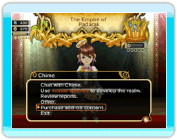

Puedes comprar y descargar contenido adicional para ampliar tu experiencia de juego en FINAL FANTASY CRYSTAL CHRONICLES: My Life as a King.
 Para acceder a esta función, selecciona "Purchase add-on content" (Comprar contenido adicional) ya sea en el menú principal o en el menú del castillo durante la partida. Para comprar contenido adicional hacen falta puntos.
Si en algún momento eliminas el contenido adicional, las partidas que se guardaron con datos del contenido adicional serán inaccesibles. Tendrás que volver a descargar el contenido adicional para poder cargar esas partidas guardadas. No necesitarás más puntos para descargar contenido adicional que ya hayas comprado.
Nota: el contenido adicional se compra con puntos. Visita el Canal Tienda Wii o el sitio web de Nintendo para obtener instrucciones sobre la adquisición de puntos.
● Dungeon Pack (Pack de mazmorras) (Disponible: 20/05/08)
Son necesarios 300 puntos / Bloques: 1
Añade 11 mazmorras al juego. Cada vez que completas una mazmorra, aumenta el límite máximo disponible de armas, armaduras, tiendas, tabernas, parques, salones de juego y viviendas.
● Triple Race Pack (Paquete triple de razas) (Disponible: 20/05/08)
Son necesarios 800 puntos / Bloques: 1
Añade cabañas liltis, guaridas selkis y chozas yukos a la lista de edificios.
● Lilty Hut (Cabaña lilti) (Disponible: 20/05/08)
Son necesarios 300 puntos / Bloques: 1
Añade cabañas liltis a la lista de edificios. Los liltis son fuertes por naturaleza y resultan los mejores guerreros.
● Selkie Den (Guarida selki) (Disponible: 20/05/08)
Son necesarios 300 puntos / Bloques: 1
Añade guaridas selkis a la lista de edificios. Los selkis son rápidos por naturaleza y resultan los mejores ladrones.
● Yuke Shack (Choza yuko) (Disponible: 20/05/08)
Son necesarios 300 puntos / Bloques: 1
Añade chozas yukos a la lista de edificios. Los yukos tienen habilidad con la magia por naturaleza y resultan los mejores magos.
● The King's New Cloak (El traje nuevo del emperador) (Disponible: 20/05/08)
Son necesarios 100 puntos / Bloques: 3
Compra otra vestimenta para el rey. El cambio de ropa se realiza en el castillo.
● Chime's Knell (Tañido de Chime) (Disponible: 20/05/08)
Son necesarios 100 puntos / Bloques: 3
Compra otra vestimenta para Chime. El cambio de ropa se realiza en el castillo.
● Luxurious House (Casa de lujo) (Disponible: 20/05/08)
Son necesarios 100 puntos / Bloques: 1
Añade casas de lujo a la lista de edificios. Estas casas atraen al reino a familias aún más grandes, lo que aumenta los ingresos de guiles.
● Sacred Shrine (Altar sagrado) (Disponible: 20/05/08)
Son necesarios 200 puntos / Bloques: 1
Añade una mazmorra que contiene la capacidad de construir un altar sagrado. Los altares sagrados construidos en el reino aumentan temporalmente las estadísticas de los aventureros.
¡Atención!
El contenido adicional descrito en esta sección está compuesto por datos que se utilizan con el juego FINAL FANTASY CRYSTAL CHRONICLES: My Life as a King.
No es posible utilizar el contenido adicional por separado.